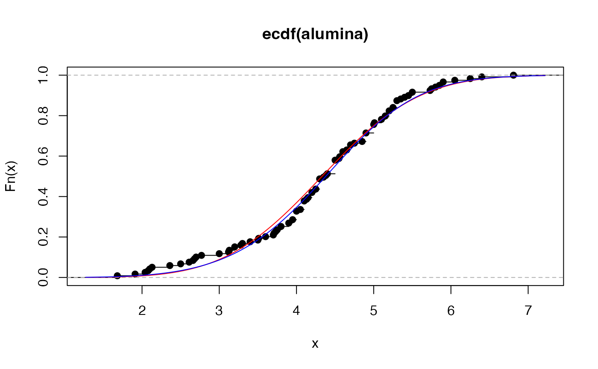

The function MCWEI() defines the Modified Cosine-Weibull (MCWEI) distribution, a three parameter
distribution, for a gamlss.family object to be used in GAMLSS fitting
using the function gamlss().
Value
Returns a gamlss.family object which can be used to fit a MCWEI distribution in the gamlss() function.
Details
The Modified Cosine-Weibull with parameters mu, sigma and nu
has density given by
\( f(x | \mu, \sigma ,\nu) = \frac{\pi \mu \sigma \nu x^{\mu -1} e^{-\sigma x^{\mu}} \cos(\frac{\pi}{2} e^{-\sigma x^{\mu}})\sin(\frac{\pi}{2} e^{-\sigma x^{\mu}})}{e^{\nu} -1} \cdot e^{\nu \left( 1- \cos^2(\frac{\pi}{2} e^{-\sigma x^{\mu}}) \right) } \)
for \(x > 0\), \(\mu>0\), \(\sigma>0\) and \(\nu \neq 0\).
References
Su, R., Aloraini, N. M., Alkhathami, A. A., Alshanbari, H. M., & Khalifa, H. A. E. W. (2025). A new statistical distribution: Its empirical exploration using the reliability and lifespan data in fashion industry. Alexandria Engineering Journal, 116, 660-671.
Examples
# Example 1
# Generating some random values with
# known mu, sigma and nu
true_mu <- 2.2
true_sigma <- 1.2
true_nu <- 10
y <- rMCWEI(n=1000, mu=true_mu, sigma=true_sigma, nu=true_nu)
# Fitting the model
require(gamlss)
mod1 <- gamlss(y~1, sigma.fo=~1, family=MCWEI,
control=gamlss.control(n.cyc=1000))
#> GAMLSS-RS iteration 1: Global Deviance = -1318.358
# Extracting the fitted values for mu, sigma and nu
# using the inverse link function
exp(coef(mod1, what="mu"))
#> (Intercept)
#> 2.35693
exp(coef(mod1, what="sigma"))
#> (Intercept)
#> 1.692704
1 / coef(mod1, what="nu")
#> (Intercept)
#> 6.846889
# Example 2
# Generating random values for a regression model
# A function to simulate a data set with Y ~ MCWEI
gendat <- function(n) {
x1 <- runif(n, min=0.4, max=0.6)
x2 <- runif(n, min=0.4, max=0.6)
mu <- exp(1 + 3 * x1)
sigma <- exp(2 + 1 * x2)
nu <- 5
y <- rMCWEI(n=n, mu=mu, sigma=sigma, nu=nu)
data.frame(y=y, x1=x1, x2=x2)
}
set.seed(1234)
dat <- gendat(n=100)
mod2 <- gamlss(y~x1, sigma.fo=~x2, nu.fo=~1,
family=MCWEI, data=dat,
control=gamlss.control(n.cyc=1000))
#> GAMLSS-RS iteration 1: Global Deviance = -332.215
#> GAMLSS-RS iteration 2: Global Deviance = -335.669
#> GAMLSS-RS iteration 3: Global Deviance = -338.313
#> GAMLSS-RS iteration 4: Global Deviance = -340.4645
#> GAMLSS-RS iteration 5: Global Deviance = -342.2827
#> GAMLSS-RS iteration 6: Global Deviance = -343.7861
#> GAMLSS-RS iteration 7: Global Deviance = -345.0652
#> GAMLSS-RS iteration 8: Global Deviance = -346.1006
#> GAMLSS-RS iteration 9: Global Deviance = -346.9961
#> GAMLSS-RS iteration 10: Global Deviance = -347.7416
#> GAMLSS-RS iteration 11: Global Deviance = -348.3516
#> GAMLSS-RS iteration 12: Global Deviance = -348.8703
#> GAMLSS-RS iteration 13: Global Deviance = -349.311
#> GAMLSS-RS iteration 14: Global Deviance = -349.6952
#> GAMLSS-RS iteration 15: Global Deviance = -350.0186
#> GAMLSS-RS iteration 16: Global Deviance = -350.2923
#> GAMLSS-RS iteration 17: Global Deviance = -350.5252
#> GAMLSS-RS iteration 18: Global Deviance = -350.7241
#> GAMLSS-RS iteration 19: Global Deviance = -350.8949
#> GAMLSS-RS iteration 20: Global Deviance = -351.042
#> GAMLSS-RS iteration 21: Global Deviance = -351.1692
#> GAMLSS-RS iteration 22: Global Deviance = -351.2773
#> GAMLSS-RS iteration 23: Global Deviance = -351.372
#> GAMLSS-RS iteration 24: Global Deviance = -351.4553
#> GAMLSS-RS iteration 25: Global Deviance = -351.5288
#> GAMLSS-RS iteration 26: Global Deviance = -351.5937
#> GAMLSS-RS iteration 27: Global Deviance = -351.6514
#> GAMLSS-RS iteration 28: Global Deviance = -351.7017
#> GAMLSS-RS iteration 29: Global Deviance = -351.7468
#> GAMLSS-RS iteration 30: Global Deviance = -351.7874
#> GAMLSS-RS iteration 31: Global Deviance = -351.8241
#> GAMLSS-RS iteration 32: Global Deviance = -351.8575
#> GAMLSS-RS iteration 33: Global Deviance = -351.888
#> GAMLSS-RS iteration 34: Global Deviance = -351.9161
#> GAMLSS-RS iteration 35: Global Deviance = -351.9421
#> GAMLSS-RS iteration 36: Global Deviance = -351.9662
#> GAMLSS-RS iteration 37: Global Deviance = -351.9887
#> GAMLSS-RS iteration 38: Global Deviance = -352.0098
#> GAMLSS-RS iteration 39: Global Deviance = -352.0298
#> GAMLSS-RS iteration 40: Global Deviance = -352.0487
#> GAMLSS-RS iteration 41: Global Deviance = -352.0668
#> GAMLSS-RS iteration 42: Global Deviance = -352.084
#> GAMLSS-RS iteration 43: Global Deviance = -352.1006
#> GAMLSS-RS iteration 44: Global Deviance = -352.1167
#> GAMLSS-RS iteration 45: Global Deviance = -352.1322
#> GAMLSS-RS iteration 46: Global Deviance = -352.1472
#> GAMLSS-RS iteration 47: Global Deviance = -352.1619
#> GAMLSS-RS iteration 48: Global Deviance = -352.1763
#> GAMLSS-RS iteration 49: Global Deviance = -352.1904
#> GAMLSS-RS iteration 50: Global Deviance = -352.2043
#> GAMLSS-RS iteration 51: Global Deviance = -352.2179
#> GAMLSS-RS iteration 52: Global Deviance = -352.2314
#> GAMLSS-RS iteration 53: Global Deviance = -352.2449
#> GAMLSS-RS iteration 54: Global Deviance = -352.2583
#> GAMLSS-RS iteration 55: Global Deviance = -352.2716
#> GAMLSS-RS iteration 56: Global Deviance = -352.2848
#> GAMLSS-RS iteration 57: Global Deviance = -352.2979
#> GAMLSS-RS iteration 58: Global Deviance = -352.3109
#> GAMLSS-RS iteration 59: Global Deviance = -352.3239
#> GAMLSS-RS iteration 60: Global Deviance = -352.3369
#> GAMLSS-RS iteration 61: Global Deviance = -352.3498
#> GAMLSS-RS iteration 62: Global Deviance = -352.3627
#> GAMLSS-RS iteration 63: Global Deviance = -352.3757
#> GAMLSS-RS iteration 64: Global Deviance = -352.3886
#> GAMLSS-RS iteration 65: Global Deviance = -352.4015
#> GAMLSS-RS iteration 66: Global Deviance = -352.4145
#> GAMLSS-RS iteration 67: Global Deviance = -352.4276
#> GAMLSS-RS iteration 68: Global Deviance = -352.4406
#> GAMLSS-RS iteration 69: Global Deviance = -352.4537
#> GAMLSS-RS iteration 70: Global Deviance = -352.4669
#> GAMLSS-RS iteration 71: Global Deviance = -352.4801
#> GAMLSS-RS iteration 72: Global Deviance = -352.4934
#> GAMLSS-RS iteration 73: Global Deviance = -352.5067
#> GAMLSS-RS iteration 74: Global Deviance = -352.5201
#> GAMLSS-RS iteration 75: Global Deviance = -352.5336
#> GAMLSS-RS iteration 76: Global Deviance = -352.5472
#> GAMLSS-RS iteration 77: Global Deviance = -352.5608
#> GAMLSS-RS iteration 78: Global Deviance = -352.5746
#> GAMLSS-RS iteration 79: Global Deviance = -352.5884
#> GAMLSS-RS iteration 80: Global Deviance = -352.6023
#> GAMLSS-RS iteration 81: Global Deviance = -352.6163
#> GAMLSS-RS iteration 82: Global Deviance = -352.6304
#> GAMLSS-RS iteration 83: Global Deviance = -352.6446
#> GAMLSS-RS iteration 84: Global Deviance = -352.6589
#> GAMLSS-RS iteration 85: Global Deviance = -352.6733
#> GAMLSS-RS iteration 86: Global Deviance = -352.6878
#> GAMLSS-RS iteration 87: Global Deviance = -352.7023
#> GAMLSS-RS iteration 88: Global Deviance = -352.7171
#> GAMLSS-RS iteration 89: Global Deviance = -352.7319
#> GAMLSS-RS iteration 90: Global Deviance = -352.7468
#> GAMLSS-RS iteration 91: Global Deviance = -352.7618
#> GAMLSS-RS iteration 92: Global Deviance = -352.777
#> GAMLSS-RS iteration 93: Global Deviance = -352.7922
#> GAMLSS-RS iteration 94: Global Deviance = -352.8076
#> GAMLSS-RS iteration 95: Global Deviance = -352.8231
#> GAMLSS-RS iteration 96: Global Deviance = -352.8387
#> GAMLSS-RS iteration 97: Global Deviance = -352.8544
#> GAMLSS-RS iteration 98: Global Deviance = -352.8703
#> GAMLSS-RS iteration 99: Global Deviance = -352.8863
#> GAMLSS-RS iteration 100: Global Deviance = -352.9024
#> GAMLSS-RS iteration 101: Global Deviance = -352.9186
#> GAMLSS-RS iteration 102: Global Deviance = -352.935
#> GAMLSS-RS iteration 103: Global Deviance = -352.9515
#> GAMLSS-RS iteration 104: Global Deviance = -352.9681
#> GAMLSS-RS iteration 105: Global Deviance = -352.9848
#> GAMLSS-RS iteration 106: Global Deviance = -353.0017
#> GAMLSS-RS iteration 107: Global Deviance = -353.0187
#> GAMLSS-RS iteration 108: Global Deviance = -353.0359
#> GAMLSS-RS iteration 109: Global Deviance = -353.0531
#> GAMLSS-RS iteration 110: Global Deviance = -353.0705
#> GAMLSS-RS iteration 111: Global Deviance = -353.0881
#> GAMLSS-RS iteration 112: Global Deviance = -353.1058
#> GAMLSS-RS iteration 113: Global Deviance = -353.1236
#> GAMLSS-RS iteration 114: Global Deviance = -353.1416
#> GAMLSS-RS iteration 115: Global Deviance = -353.1597
#> GAMLSS-RS iteration 116: Global Deviance = -353.178
#> GAMLSS-RS iteration 117: Global Deviance = -353.1964
#> GAMLSS-RS iteration 118: Global Deviance = -353.2149
#> GAMLSS-RS iteration 119: Global Deviance = -353.2336
#> GAMLSS-RS iteration 120: Global Deviance = -353.2524
#> GAMLSS-RS iteration 121: Global Deviance = -353.2714
#> GAMLSS-RS iteration 122: Global Deviance = -353.2905
#> GAMLSS-RS iteration 123: Global Deviance = -353.3098
#> GAMLSS-RS iteration 124: Global Deviance = -353.3292
#> GAMLSS-RS iteration 125: Global Deviance = -353.3488
#> GAMLSS-RS iteration 126: Global Deviance = -353.3685
#> GAMLSS-RS iteration 127: Global Deviance = -353.3884
#> GAMLSS-RS iteration 128: Global Deviance = -353.4085
#> GAMLSS-RS iteration 129: Global Deviance = -353.4286
#> GAMLSS-RS iteration 130: Global Deviance = -353.449
#> GAMLSS-RS iteration 131: Global Deviance = -353.4695
#> GAMLSS-RS iteration 132: Global Deviance = -353.4901
#> GAMLSS-RS iteration 133: Global Deviance = -353.5109
#> GAMLSS-RS iteration 134: Global Deviance = -353.5319
#> GAMLSS-RS iteration 135: Global Deviance = -353.5523
#> GAMLSS-RS iteration 136: Global Deviance = -353.573
#> GAMLSS-RS iteration 137: Global Deviance = -353.5938
#> GAMLSS-RS iteration 138: Global Deviance = -353.6148
#> GAMLSS-RS iteration 139: Global Deviance = -353.636
#> GAMLSS-RS iteration 140: Global Deviance = -353.6574
#> GAMLSS-RS iteration 141: Global Deviance = -353.6789
#> GAMLSS-RS iteration 142: Global Deviance = -353.7005
#> GAMLSS-RS iteration 143: Global Deviance = -353.7224
#> GAMLSS-RS iteration 144: Global Deviance = -353.7444
#> GAMLSS-RS iteration 145: Global Deviance = -353.7665
#> GAMLSS-RS iteration 146: Global Deviance = -353.7889
#> GAMLSS-RS iteration 147: Global Deviance = -353.8113
#> GAMLSS-RS iteration 148: Global Deviance = -353.834
#> GAMLSS-RS iteration 149: Global Deviance = -353.8567
#> GAMLSS-RS iteration 150: Global Deviance = -353.8797
#> GAMLSS-RS iteration 151: Global Deviance = -353.9027
#> GAMLSS-RS iteration 152: Global Deviance = -353.926
#> GAMLSS-RS iteration 153: Global Deviance = -353.9493
#> GAMLSS-RS iteration 154: Global Deviance = -353.9729
#> GAMLSS-RS iteration 155: Global Deviance = -353.9965
#> GAMLSS-RS iteration 156: Global Deviance = -354.0203
#> GAMLSS-RS iteration 157: Global Deviance = -354.0443
#> GAMLSS-RS iteration 158: Global Deviance = -354.0684
#> GAMLSS-RS iteration 159: Global Deviance = -354.0926
#> GAMLSS-RS iteration 160: Global Deviance = -354.1169
#> GAMLSS-RS iteration 161: Global Deviance = -354.1414
#> GAMLSS-RS iteration 162: Global Deviance = -354.166
#> GAMLSS-RS iteration 163: Global Deviance = -354.1908
#> GAMLSS-RS iteration 164: Global Deviance = -354.2156
#> GAMLSS-RS iteration 165: Global Deviance = -354.2406
#> GAMLSS-RS iteration 166: Global Deviance = -354.2658
#> GAMLSS-RS iteration 167: Global Deviance = -354.291
#> GAMLSS-RS iteration 168: Global Deviance = -354.3163
#> GAMLSS-RS iteration 169: Global Deviance = -354.3418
#> GAMLSS-RS iteration 170: Global Deviance = -354.3674
#> GAMLSS-RS iteration 171: Global Deviance = -354.3931
#> GAMLSS-RS iteration 172: Global Deviance = -354.4189
#> GAMLSS-RS iteration 173: Global Deviance = -354.4448
#> GAMLSS-RS iteration 174: Global Deviance = -354.4708
#> GAMLSS-RS iteration 175: Global Deviance = -354.4969
#> GAMLSS-RS iteration 176: Global Deviance = -354.5231
#> GAMLSS-RS iteration 177: Global Deviance = -354.5493
#> GAMLSS-RS iteration 178: Global Deviance = -354.5757
#> GAMLSS-RS iteration 179: Global Deviance = -354.6022
#> GAMLSS-RS iteration 180: Global Deviance = -354.6287
#> GAMLSS-RS iteration 181: Global Deviance = -354.6553
#> GAMLSS-RS iteration 182: Global Deviance = -354.682
#> GAMLSS-RS iteration 183: Global Deviance = -354.7087
#> GAMLSS-RS iteration 184: Global Deviance = -354.7356
#> GAMLSS-RS iteration 185: Global Deviance = -354.7624
#> GAMLSS-RS iteration 186: Global Deviance = -354.7894
#> GAMLSS-RS iteration 187: Global Deviance = -354.8164
#> GAMLSS-RS iteration 188: Global Deviance = -354.8434
#> GAMLSS-RS iteration 189: Global Deviance = -354.8705
#> GAMLSS-RS iteration 190: Global Deviance = -354.8977
#> GAMLSS-RS iteration 191: Global Deviance = -354.9248
#> GAMLSS-RS iteration 192: Global Deviance = -354.952
#> GAMLSS-RS iteration 193: Global Deviance = -354.9793
#> GAMLSS-RS iteration 194: Global Deviance = -355.0066
#> GAMLSS-RS iteration 195: Global Deviance = -355.0338
#> GAMLSS-RS iteration 196: Global Deviance = -355.0611
#> GAMLSS-RS iteration 197: Global Deviance = -355.0885
#> GAMLSS-RS iteration 198: Global Deviance = -355.1158
#> GAMLSS-RS iteration 199: Global Deviance = -355.1431
#> GAMLSS-RS iteration 200: Global Deviance = -355.1704
#> GAMLSS-RS iteration 201: Global Deviance = -355.1977
#> GAMLSS-RS iteration 202: Global Deviance = -355.225
#> GAMLSS-RS iteration 203: Global Deviance = -355.2523
#> GAMLSS-RS iteration 204: Global Deviance = -355.2796
#> GAMLSS-RS iteration 205: Global Deviance = -355.3069
#> GAMLSS-RS iteration 206: Global Deviance = -355.3341
#> GAMLSS-RS iteration 207: Global Deviance = -355.3613
#> GAMLSS-RS iteration 208: Global Deviance = -355.3884
#> GAMLSS-RS iteration 209: Global Deviance = -355.4155
#> GAMLSS-RS iteration 210: Global Deviance = -355.4426
#> GAMLSS-RS iteration 211: Global Deviance = -355.4696
#> GAMLSS-RS iteration 212: Global Deviance = -355.4966
#> GAMLSS-RS iteration 213: Global Deviance = -355.5235
#> GAMLSS-RS iteration 214: Global Deviance = -355.5503
#> GAMLSS-RS iteration 215: Global Deviance = -355.5771
#> GAMLSS-RS iteration 216: Global Deviance = -355.6038
#> GAMLSS-RS iteration 217: Global Deviance = -355.6305
#> GAMLSS-RS iteration 218: Global Deviance = -355.657
#> GAMLSS-RS iteration 219: Global Deviance = -355.6835
#> GAMLSS-RS iteration 220: Global Deviance = -355.7099
#> GAMLSS-RS iteration 221: Global Deviance = -355.7362
#> GAMLSS-RS iteration 222: Global Deviance = -355.7624
#> GAMLSS-RS iteration 223: Global Deviance = -355.7885
#> GAMLSS-RS iteration 224: Global Deviance = -355.8145
#> GAMLSS-RS iteration 225: Global Deviance = -355.8404
#> GAMLSS-RS iteration 226: Global Deviance = -355.8662
#> GAMLSS-RS iteration 227: Global Deviance = -355.8919
#> GAMLSS-RS iteration 228: Global Deviance = -355.9175
#> GAMLSS-RS iteration 229: Global Deviance = -355.943
#> GAMLSS-RS iteration 230: Global Deviance = -355.9683
#> GAMLSS-RS iteration 231: Global Deviance = -355.9935
#> GAMLSS-RS iteration 232: Global Deviance = -356.0186
#> GAMLSS-RS iteration 233: Global Deviance = -356.0436
#> GAMLSS-RS iteration 234: Global Deviance = -356.0685
#> GAMLSS-RS iteration 235: Global Deviance = -356.0932
#> GAMLSS-RS iteration 236: Global Deviance = -356.1178
#> GAMLSS-RS iteration 237: Global Deviance = -356.1422
#> GAMLSS-RS iteration 238: Global Deviance = -356.1665
#> GAMLSS-RS iteration 239: Global Deviance = -356.1907
#> GAMLSS-RS iteration 240: Global Deviance = -356.2147
#> GAMLSS-RS iteration 241: Global Deviance = -356.2386
#> GAMLSS-RS iteration 242: Global Deviance = -356.2623
#> GAMLSS-RS iteration 243: Global Deviance = -356.2859
#> GAMLSS-RS iteration 244: Global Deviance = -356.3094
#> GAMLSS-RS iteration 245: Global Deviance = -356.3326
#> GAMLSS-RS iteration 246: Global Deviance = -356.3558
#> GAMLSS-RS iteration 247: Global Deviance = -356.3788
#> GAMLSS-RS iteration 248: Global Deviance = -356.4016
#> GAMLSS-RS iteration 249: Global Deviance = -356.4243
#> GAMLSS-RS iteration 250: Global Deviance = -356.4468
#> GAMLSS-RS iteration 251: Global Deviance = -356.4691
#> GAMLSS-RS iteration 252: Global Deviance = -356.4913
#> GAMLSS-RS iteration 253: Global Deviance = -356.5133
#> GAMLSS-RS iteration 254: Global Deviance = -356.5352
#> GAMLSS-RS iteration 255: Global Deviance = -356.5569
#> GAMLSS-RS iteration 256: Global Deviance = -356.5785
#> GAMLSS-RS iteration 257: Global Deviance = -356.5998
#> GAMLSS-RS iteration 258: Global Deviance = -356.6211
#> GAMLSS-RS iteration 259: Global Deviance = -356.6421
#> GAMLSS-RS iteration 260: Global Deviance = -356.663
#> GAMLSS-RS iteration 261: Global Deviance = -356.6837
#> GAMLSS-RS iteration 262: Global Deviance = -356.7043
#> GAMLSS-RS iteration 263: Global Deviance = -356.7246
#> GAMLSS-RS iteration 264: Global Deviance = -356.7449
#> GAMLSS-RS iteration 265: Global Deviance = -356.7649
#> GAMLSS-RS iteration 266: Global Deviance = -356.7848
#> GAMLSS-RS iteration 267: Global Deviance = -356.8045
#> GAMLSS-RS iteration 268: Global Deviance = -356.824
#> GAMLSS-RS iteration 269: Global Deviance = -356.8434
#> GAMLSS-RS iteration 270: Global Deviance = -356.8626
#> GAMLSS-RS iteration 271: Global Deviance = -356.8816
#> GAMLSS-RS iteration 272: Global Deviance = -356.9005
#> GAMLSS-RS iteration 273: Global Deviance = -356.9192
#> GAMLSS-RS iteration 274: Global Deviance = -356.9377
#> GAMLSS-RS iteration 275: Global Deviance = -356.956
#> GAMLSS-RS iteration 276: Global Deviance = -356.9742
#> GAMLSS-RS iteration 277: Global Deviance = -356.9922
#> GAMLSS-RS iteration 278: Global Deviance = -357.01
#> GAMLSS-RS iteration 279: Global Deviance = -357.0277
#> GAMLSS-RS iteration 280: Global Deviance = -357.0452
#> GAMLSS-RS iteration 281: Global Deviance = -357.0626
#> GAMLSS-RS iteration 282: Global Deviance = -357.0797
#> GAMLSS-RS iteration 283: Global Deviance = -357.0967
#> GAMLSS-RS iteration 284: Global Deviance = -357.1135
#> GAMLSS-RS iteration 285: Global Deviance = -357.1302
#> GAMLSS-RS iteration 286: Global Deviance = -357.1467
#> GAMLSS-RS iteration 287: Global Deviance = -357.163
#> GAMLSS-RS iteration 288: Global Deviance = -357.1791
#> GAMLSS-RS iteration 289: Global Deviance = -357.1951
#> GAMLSS-RS iteration 290: Global Deviance = -357.2109
#> GAMLSS-RS iteration 291: Global Deviance = -357.2266
#> GAMLSS-RS iteration 292: Global Deviance = -357.2421
#> GAMLSS-RS iteration 293: Global Deviance = -357.2574
#> GAMLSS-RS iteration 294: Global Deviance = -357.2725
#> GAMLSS-RS iteration 295: Global Deviance = -357.2875
#> GAMLSS-RS iteration 296: Global Deviance = -357.3024
#> GAMLSS-RS iteration 297: Global Deviance = -357.317
#> GAMLSS-RS iteration 298: Global Deviance = -357.3315
#> GAMLSS-RS iteration 299: Global Deviance = -357.3458
#> GAMLSS-RS iteration 300: Global Deviance = -357.36
#> GAMLSS-RS iteration 301: Global Deviance = -357.374
#> GAMLSS-RS iteration 302: Global Deviance = -357.3879
#> GAMLSS-RS iteration 303: Global Deviance = -357.4015
#> GAMLSS-RS iteration 304: Global Deviance = -357.4151
#> GAMLSS-RS iteration 305: Global Deviance = -357.4284
#> GAMLSS-RS iteration 306: Global Deviance = -357.4416
#> GAMLSS-RS iteration 307: Global Deviance = -357.4547
#> GAMLSS-RS iteration 308: Global Deviance = -357.4675
#> GAMLSS-RS iteration 309: Global Deviance = -357.4803
#> GAMLSS-RS iteration 310: Global Deviance = -357.4928
#> GAMLSS-RS iteration 311: Global Deviance = -357.5052
#> GAMLSS-RS iteration 312: Global Deviance = -357.5175
#> GAMLSS-RS iteration 313: Global Deviance = -357.5296
#> GAMLSS-RS iteration 314: Global Deviance = -357.5415
#> GAMLSS-RS iteration 315: Global Deviance = -357.5533
#> GAMLSS-RS iteration 316: Global Deviance = -357.565
#> GAMLSS-RS iteration 317: Global Deviance = -357.5764
#> GAMLSS-RS iteration 318: Global Deviance = -357.5878
#> GAMLSS-RS iteration 319: Global Deviance = -357.599
#> GAMLSS-RS iteration 320: Global Deviance = -357.61
#> GAMLSS-RS iteration 321: Global Deviance = -357.6209
#> GAMLSS-RS iteration 322: Global Deviance = -357.6316
#> GAMLSS-RS iteration 323: Global Deviance = -357.6422
#> GAMLSS-RS iteration 324: Global Deviance = -357.6526
#> GAMLSS-RS iteration 325: Global Deviance = -357.6629
#> GAMLSS-RS iteration 326: Global Deviance = -357.673
#> GAMLSS-RS iteration 327: Global Deviance = -357.683
#> GAMLSS-RS iteration 328: Global Deviance = -357.6929
#> GAMLSS-RS iteration 329: Global Deviance = -357.7026
#> GAMLSS-RS iteration 330: Global Deviance = -357.7122
#> GAMLSS-RS iteration 331: Global Deviance = -357.7216
#> GAMLSS-RS iteration 332: Global Deviance = -357.731
#> GAMLSS-RS iteration 333: Global Deviance = -357.7402
#> GAMLSS-RS iteration 334: Global Deviance = -357.7492
#> GAMLSS-RS iteration 335: Global Deviance = -357.7581
#> GAMLSS-RS iteration 336: Global Deviance = -357.7668
#> GAMLSS-RS iteration 337: Global Deviance = -357.7754
#> GAMLSS-RS iteration 338: Global Deviance = -357.7839
#> GAMLSS-RS iteration 339: Global Deviance = -357.7922
#> GAMLSS-RS iteration 340: Global Deviance = -357.8004
#> GAMLSS-RS iteration 341: Global Deviance = -357.8084
#> GAMLSS-RS iteration 342: Global Deviance = -357.8163
#> GAMLSS-RS iteration 343: Global Deviance = -357.8241
#> GAMLSS-RS iteration 344: Global Deviance = -357.8317
#> GAMLSS-RS iteration 345: Global Deviance = -357.8392
#> GAMLSS-RS iteration 346: Global Deviance = -357.8466
#> GAMLSS-RS iteration 347: Global Deviance = -357.8539
#> GAMLSS-RS iteration 348: Global Deviance = -357.861
#> GAMLSS-RS iteration 349: Global Deviance = -357.8681
#> GAMLSS-RS iteration 350: Global Deviance = -357.875
#> GAMLSS-RS iteration 351: Global Deviance = -357.8817
#> GAMLSS-RS iteration 352: Global Deviance = -357.8884
#> GAMLSS-RS iteration 353: Global Deviance = -357.8949
#> GAMLSS-RS iteration 354: Global Deviance = -357.9014
#> GAMLSS-RS iteration 355: Global Deviance = -357.9077
#> GAMLSS-RS iteration 356: Global Deviance = -357.9139
#> GAMLSS-RS iteration 357: Global Deviance = -357.92
#> GAMLSS-RS iteration 358: Global Deviance = -357.926
#> GAMLSS-RS iteration 359: Global Deviance = -357.9318
#> GAMLSS-RS iteration 360: Global Deviance = -357.9376
#> GAMLSS-RS iteration 361: Global Deviance = -357.9433
#> GAMLSS-RS iteration 362: Global Deviance = -357.9488
#> GAMLSS-RS iteration 363: Global Deviance = -357.9543
#> GAMLSS-RS iteration 364: Global Deviance = -357.9596
#> GAMLSS-RS iteration 365: Global Deviance = -357.9648
#> GAMLSS-RS iteration 366: Global Deviance = -357.97
#> GAMLSS-RS iteration 367: Global Deviance = -357.975
#> GAMLSS-RS iteration 368: Global Deviance = -357.98
#> GAMLSS-RS iteration 369: Global Deviance = -357.9848
#> GAMLSS-RS iteration 370: Global Deviance = -357.9896
#> GAMLSS-RS iteration 371: Global Deviance = -357.9942
#> GAMLSS-RS iteration 372: Global Deviance = -357.9988
#> GAMLSS-RS iteration 373: Global Deviance = -358.0033
#> GAMLSS-RS iteration 374: Global Deviance = -358.0076
#> GAMLSS-RS iteration 375: Global Deviance = -358.0119
#> GAMLSS-RS iteration 376: Global Deviance = -358.0161
#> GAMLSS-RS iteration 377: Global Deviance = -358.0203
#> GAMLSS-RS iteration 378: Global Deviance = -358.0243
#> GAMLSS-RS iteration 379: Global Deviance = -358.0282
#> GAMLSS-RS iteration 380: Global Deviance = -358.0324
#> GAMLSS-RS iteration 381: Global Deviance = -358.0365
#> GAMLSS-RS iteration 382: Global Deviance = -358.0404
#> GAMLSS-RS iteration 383: Global Deviance = -358.0442
#> GAMLSS-RS iteration 384: Global Deviance = -358.048
#> GAMLSS-RS iteration 385: Global Deviance = -358.0516
#> GAMLSS-RS iteration 386: Global Deviance = -358.0552
#> GAMLSS-RS iteration 387: Global Deviance = -358.0586
#> GAMLSS-RS iteration 388: Global Deviance = -358.062
#> GAMLSS-RS iteration 389: Global Deviance = -358.0653
#> GAMLSS-RS iteration 390: Global Deviance = -358.0685
#> GAMLSS-RS iteration 391: Global Deviance = -358.0716
#> GAMLSS-RS iteration 392: Global Deviance = -358.0747
#> GAMLSS-RS iteration 393: Global Deviance = -358.0777
#> GAMLSS-RS iteration 394: Global Deviance = -358.0806
#> GAMLSS-RS iteration 395: Global Deviance = -358.0834
#> GAMLSS-RS iteration 396: Global Deviance = -358.0862
#> GAMLSS-RS iteration 397: Global Deviance = -358.0889
#> GAMLSS-RS iteration 398: Global Deviance = -358.0915
#> GAMLSS-RS iteration 399: Global Deviance = -358.0941
#> GAMLSS-RS iteration 400: Global Deviance = -358.0965
#> GAMLSS-RS iteration 401: Global Deviance = -358.099
#> GAMLSS-RS iteration 402: Global Deviance = -358.1014
#> GAMLSS-RS iteration 403: Global Deviance = -358.1037
#> GAMLSS-RS iteration 404: Global Deviance = -358.1059
#> GAMLSS-RS iteration 405: Global Deviance = -358.1081
#> GAMLSS-RS iteration 406: Global Deviance = -358.1103
#> GAMLSS-RS iteration 407: Global Deviance = -358.1123
#> GAMLSS-RS iteration 408: Global Deviance = -358.1144
#> GAMLSS-RS iteration 409: Global Deviance = -358.1163
#> GAMLSS-RS iteration 410: Global Deviance = -358.1183
#> GAMLSS-RS iteration 411: Global Deviance = -358.1201
#> GAMLSS-RS iteration 412: Global Deviance = -358.122
#> GAMLSS-RS iteration 413: Global Deviance = -358.1238
#> GAMLSS-RS iteration 414: Global Deviance = -358.1255
#> GAMLSS-RS iteration 415: Global Deviance = -358.1272
#> GAMLSS-RS iteration 416: Global Deviance = -358.1288
#> GAMLSS-RS iteration 417: Global Deviance = -358.1304
#> GAMLSS-RS iteration 418: Global Deviance = -358.132
#> GAMLSS-RS iteration 419: Global Deviance = -358.1336
#> GAMLSS-RS iteration 420: Global Deviance = -358.1351
#> GAMLSS-RS iteration 421: Global Deviance = -358.1367
#> GAMLSS-RS iteration 422: Global Deviance = -358.1382
#> GAMLSS-RS iteration 423: Global Deviance = -358.1396
#> GAMLSS-RS iteration 424: Global Deviance = -358.1411
#> GAMLSS-RS iteration 425: Global Deviance = -358.1425
#> GAMLSS-RS iteration 426: Global Deviance = -358.1438
#> GAMLSS-RS iteration 427: Global Deviance = -358.1452
#> GAMLSS-RS iteration 428: Global Deviance = -358.1464
#> GAMLSS-RS iteration 429: Global Deviance = -358.1477
#> GAMLSS-RS iteration 430: Global Deviance = -358.1489
#> GAMLSS-RS iteration 431: Global Deviance = -358.1501
#> GAMLSS-RS iteration 432: Global Deviance = -358.1513
#> GAMLSS-RS iteration 433: Global Deviance = -358.1524
#> GAMLSS-RS iteration 434: Global Deviance = -358.1534
#> GAMLSS-RS iteration 435: Global Deviance = -358.1545
#> GAMLSS-RS iteration 436: Global Deviance = -358.1555
#> GAMLSS-RS iteration 437: Global Deviance = -358.1565
summary(mod2)
#> Warning: summary: vcov has failed, option qr is used instead
#> ******************************************************************
#> Family: c("MCWEI", "Modified Cosine-Weibull")
#>
#> Call: gamlss(formula = y ~ x1, sigma.formula = ~x2, nu.formula = ~1,
#> family = MCWEI, data = dat, control = gamlss.control(n.cyc = 1000))
#>
#> Fitting method: RS()
#>
#> ------------------------------------------------------------------
#> Mu link function: log
#> Mu Coefficients:
#> Estimate Std. Error t value Pr(>|t|)
#> (Intercept) 0.9092 0.1558 5.834 6.98e-08 ***
#> x1 3.4871 0.3187 10.943 < 2e-16 ***
#> ---
#> Signif. codes: 0 ‘***’ 0.001 ‘**’ 0.01 ‘*’ 0.05 ‘.’ 0.1 ‘ ’ 1
#>
#> ------------------------------------------------------------------
#> Sigma link function: log
#> Sigma Coefficients:
#> Estimate Std. Error t value Pr(>|t|)
#> (Intercept) 2.8702 0.5914 4.853 4.59e-06 ***
#> x2 0.6371 1.1627 0.548 0.585
#> ---
#> Signif. codes: 0 ‘***’ 0.001 ‘**’ 0.01 ‘*’ 0.05 ‘.’ 0.1 ‘ ’ 1
#>
#> ------------------------------------------------------------------
#> Nu link function: inverse
#> Nu Coefficients:
#> Estimate Std. Error t value Pr(>|t|)
#> (Intercept) 0.23011 0.02642 8.708 7.12e-14 ***
#> ---
#> Signif. codes: 0 ‘***’ 0.001 ‘**’ 0.01 ‘*’ 0.05 ‘.’ 0.1 ‘ ’ 1
#>
#> ------------------------------------------------------------------
#> No. of observations in the fit: 100
#> Degrees of Freedom for the fit: 5
#> Residual Deg. of Freedom: 95
#> at cycle: 437
#>
#> Global Deviance: -358.1565
#> AIC: -348.1565
#> SBC: -335.1306
#> ******************************************************************
1 / coef(mod2, what="nu")
#> (Intercept)
#> 4.345663
# Example 3
# The data represent fracture toughness (a measure of resistance to fracture,
# in MPa * m^1/2)
# Su et al. (2025) page 667
alumina <- c(
5.50, 5.00, 4.90, 6.40, 5.10, 5.20, 5.20, 5.00, 4.70, 4.00,
4.50, 4.20, 4.10, 4.56, 5.01, 4.70, 3.13, 3.12, 2.68, 2.77,
2.70, 2.36, 4.38, 5.73, 4.35, 6.81, 1.91, 2.66, 2.61, 1.68,
2.04, 2.08, 2.13, 3.80, 3.73, 3.71, 3.28, 3.90, 4.00, 3.80,
4.10, 3.90, 4.05, 4.00, 3.95, 4.00, 4.50, 4.50, 4.20, 4.55,
4.65, 4.10, 4.25, 4.30, 4.50, 4.70, 5.15, 4.30, 4.50, 4.90,
5.00, 5.35, 5.15, 5.25, 5.80, 5.85, 5.90, 5.75, 6.25, 6.05,
5.90, 3.60, 4.10, 4.50, 5.30, 4.85, 5.30, 5.45, 5.10, 5.30,
5.20, 5.30, 5.25, 4.75, 4.50, 4.20, 4.00, 4.15, 4.25, 4.30,
3.75, 3.95, 3.51, 4.13, 5.40, 5.00, 2.10, 4.60, 3.20, 2.50,
4.10, 3.50, 3.20, 3.30, 4.60, 4.30, 4.30, 4.50, 5.50, 4.60,
4.90, 4.30, 3.00, 3.40, 3.70, 4.40, 4.90, 4.90, 5.00
)
mod3 <- gamlss(alumina~1, sigma.fo=~1, family=MCWEI,
control=gamlss.control(n.cyc=1000))
#> GAMLSS-RS iteration 1: Global Deviance = 341.5339
# Extracting the fitted values for mu, sigma and nu
# using the inverse link function
exp(coef(mod3, what="mu"))
#> (Intercept)
#> 3.200389
exp(coef(mod3, what="sigma"))
#> (Intercept)
#> 0.00636299
1 / coef(mod3, what="nu")
#> (Intercept)
#> 0.0001238661
hist(alumina, freq = FALSE)
curve(dMCWEI(x,
mu=exp(coef(mod3, what="mu")),
sigma=exp(coef(mod3, what="sigma")),
nu=1 / coef(mod3, what="nu")),
add=TRUE, col="red")
curve(dMCWEI(x,
mu=2.73329299,
sigma=0.01786388,
nu=-1.89210407),
add=TRUE, col="blue") # Using estimated values of Su et al (2025)
 plot(ecdf(alumina))
curve(pMCWEI(x,
mu=exp(coef(mod3, what="mu")),
sigma=exp(coef(mod3, what="sigma")),
nu=1 / coef(mod3, what="nu")),
add=TRUE, col="red")
curve(pMCWEI(x,
mu=2.73329299,
sigma=0.01786388,
nu=-1.89210407),
add=TRUE, col="blue") # Using estimated values of Su et al (2025)
plot(ecdf(alumina))
curve(pMCWEI(x,
mu=exp(coef(mod3, what="mu")),
sigma=exp(coef(mod3, what="sigma")),
nu=1 / coef(mod3, what="nu")),
add=TRUE, col="red")
curve(pMCWEI(x,
mu=2.73329299,
sigma=0.01786388,
nu=-1.89210407),
add=TRUE, col="blue") # Using estimated values of Su et al (2025)
